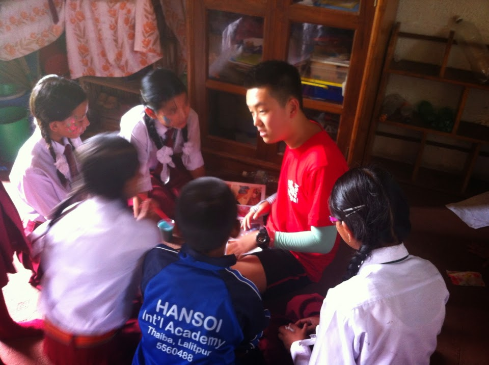
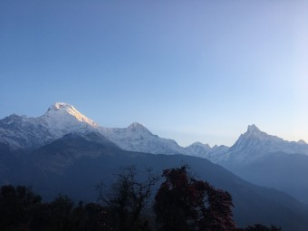

네팔


사실 지원한 동기는 해외에 가고 싶은 마음이 제일 컸고,
내 영어능력이 어느정도 되는가, 해외에서 불편하지 않게 살 수 있을 정도가 되는가를 확인해보고 싶었다.
이 학교는 한국인이 세운 학교로 정말 산 속 깊이에 있는 학교다.
아이들에게 영어로 동화를 읽어주고 페이스페인팅을 해주는 활동이었는데,
이를 통해서 나의 영어능력을 확인할 수 있었으며 아이들이게 더 많은 것을 알려주지 못해서 너무 아쉬웠다.
